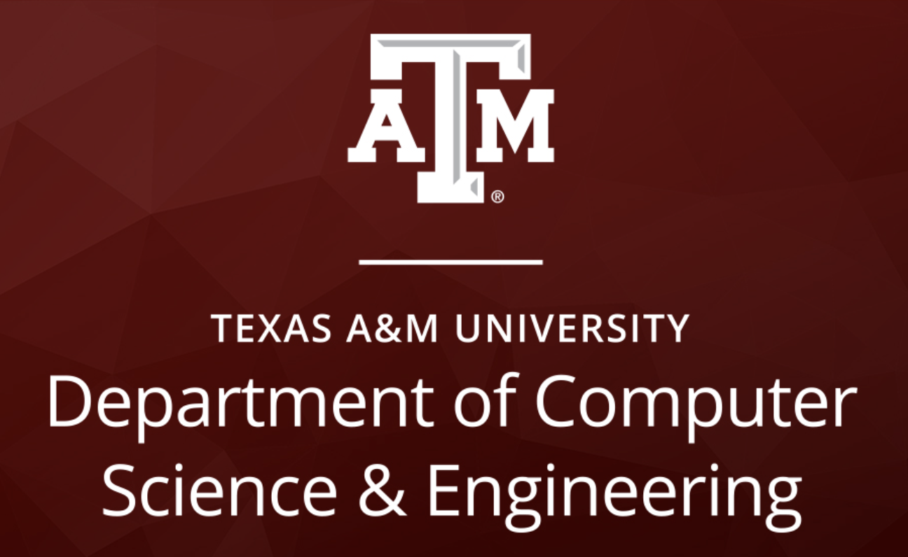
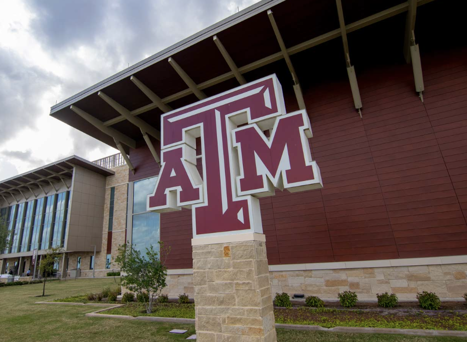

About Me:
* Leading the research to develop a machine learning tool to reducing drowing risk across the world
* Currently working as a Software Engineer part-time at RCP Inc.
* Worked as a Chemical Engineering intern before finding my passion in Computer Science
 